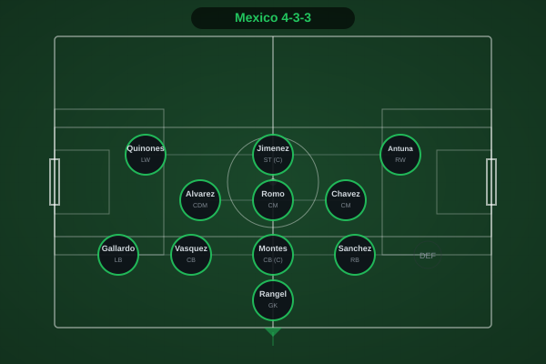
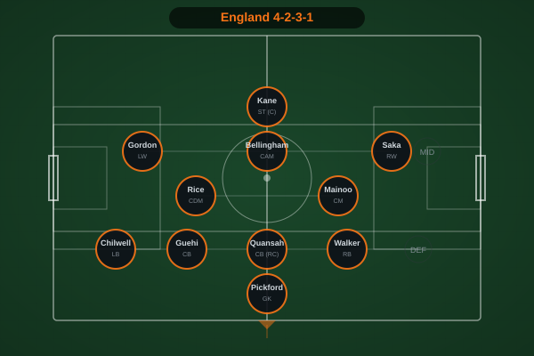
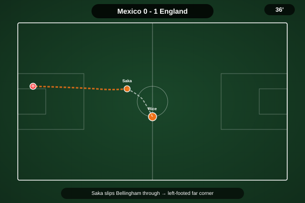
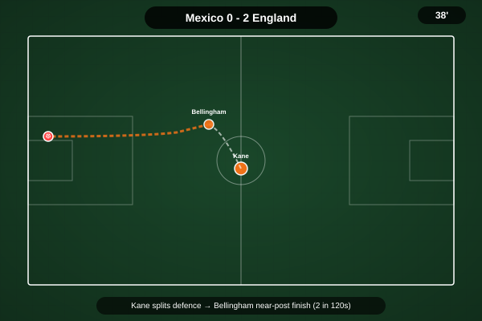
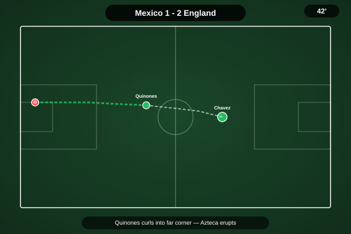
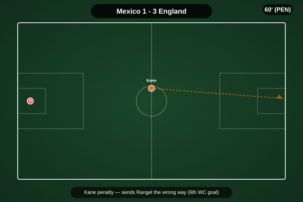
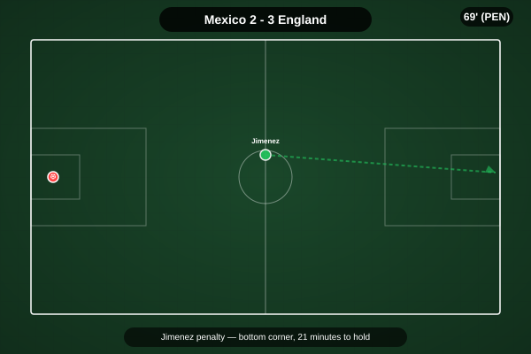
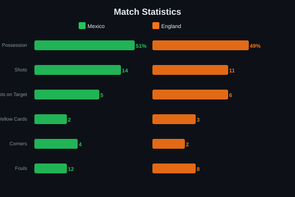
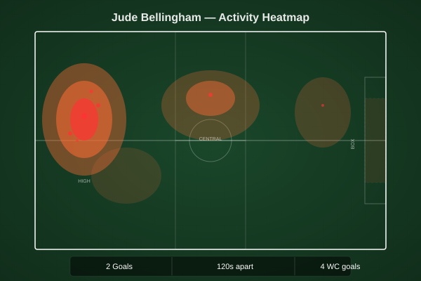

Mexico 2-3 England. A game that had everything. Two stunning Bellingham goals in two minutes, a Quinones response, a red card that left England defending for 36 minutes with 10 men, two penalties — one scored by Kane, one by Jimenez — and a final 25 minutes of Mexican pressure that England somehow survived. Thomas Tuchel's side showed a resilience that has often been questioned, and Jude Bellingham delivered a performance that will be remembered as one of the great individual displays by an English player in a knockout match.
England advance to face Norway in the quarterfinals in Miami. Mexico's dream run at home ends in heartbreak, but they exit with their heads held high.
Mexico, under Javier Aguirre, set up in a 4-3-3 with Jimenez and Quinones leading the line. The altitude at the Azteca — 2,200 meters — was expected to be their biggest weapon. England, in Tuchel's 4-2-3-1, had prepared for the conditions but the first 20 minutes suggested the altitude was affecting their passing rhythm. The game was delayed an hour by lightning, which may have worked in England's favor — it cooled the temperature and reduced the altitude effect.
England's gameplan was clear: exploit the spaces behind Mexico's full-backs. Saka and Gordon stayed wide, Bellingham attacked the half-spaces, and Kane dropped deep to link play. It worked perfectly for a 10-minute spell that decided the match.

36' — Bellingham (assist Saka) — 0-1. Saka drifted inside from the right, drawing two defenders, and slipped a perfectly weighted pass into Bellingham's run. The Real Madrid midfielder took one touch to set himself and smashed a left-footed shot across Rangel into the far corner. The Azteca fell silent.

38' — Bellingham (assist Kane) — 0-2. Two minutes later, Kane dropped into midfield, turned, and played a first-time pass that split the Mexican defense. Bellingham again — this time a composed finish with his right foot, placed inside the near post. Two goals in 120 seconds. The Azteca, for the first time all tournament, was stunned into silence.

42' — Quinones — 1-2. Mexico needed an instant response and got it. Quinones, their tournament top scorer, collected the ball on the edge of the box, shifted onto his right foot, and curled a beautiful shot beyond Pickford's reach. The stadium exploded. Game on.

60' — Kane (penalty) — 1-3. England, now down to 10 men after Quansah's red card (54'), won a penalty when Gordon was brought down in the box. Kane stepped up and sent Rangel the wrong way — his sixth goal of the tournament and perhaps his most important. England led with 30 minutes to hold.

69' — Jimenez (penalty) — 2-3. Mexico refused to fold. A handball in the box gave them a penalty, and Jimenez — the veteran striker playing in his final World Cup — drilled it into the bottom corner. 3-2 with 21 minutes plus stoppage time to play. The Azteca was a wall of sound.
Jarell Quansah's tournament took a brutal turn. Already on a yellow, the young defender made a desperate challenge to stop a Mexican counter and was shown a second yellow. England would play the final 36 minutes with 10 men at altitude, away from home, in front of 87,000 roaring fans. It was the kind of situation that has historically broken English teams. This one didn't break.

Remarkably, the stats show an even contest — 51% possession for Mexico, 49% for England. Mexico had 14 shots to England's 11, but England managed 6 on target to Mexico's 5 — evidence of their clinical edge in the decisive moments. The altitude did not seem to affect England's running stats; they pressed effectively even with 10 men, forcing Mexico into wide areas. England's 3 yellow cards reflected the tactical fouling required to protect their lead. Mexico committed 2 yellow cards, both born of frustration as the clock ticked down.

Two goals in 120 seconds. A relentless pressing shift even after England went down to 10 men. Bellingham's performance was the difference between England going out and England advancing. His first goal — a left-footed strike from Saka's pass — was technically excellent. His second — a composed near-post finish from Kane's pass — showed a striker's instinct. At 23, he delivered the kind of knockout performance that defines great players. He now has four goals at the 2026 World Cup and is emerging as the offensive engine of this England team.
Illustrative reconstruction based on known event locations, not raw GPS tracking data.
England reach the quarterfinals for the third consecutive World Cup and will face Norway in Miami on 11 July. For Thomas Tuchel, this win validates the tactical flexibility and resilience he has instilled. For Mexico, the dream ends at the Round of 16 — their best run since 1986 — but they confirmed they belong on this stage. The altitude, the crowd, the lightning delay, the red card, the fightback — through all of it, England found a way. That is the mark of a team that believes.